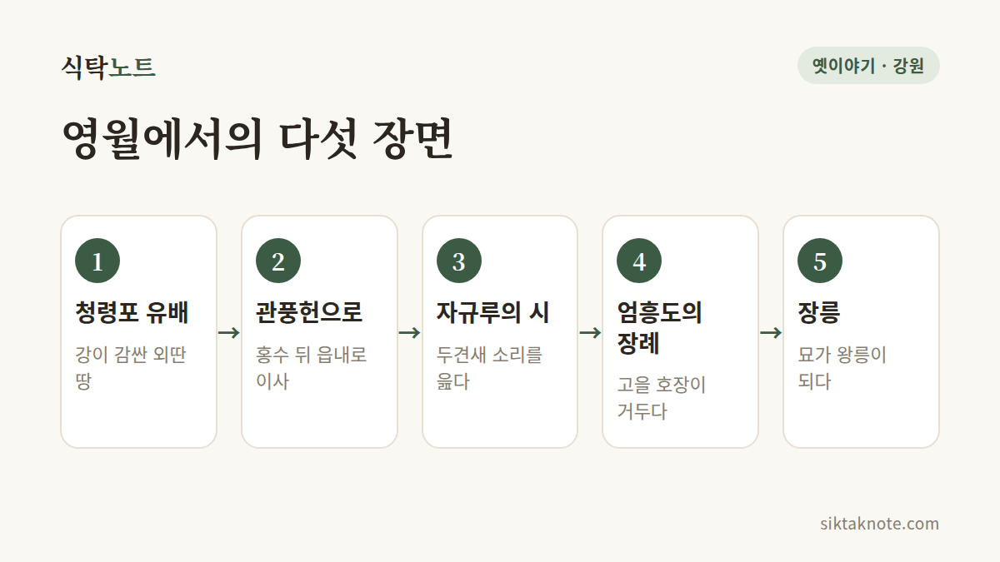

단종과 영월 이야기 — 청령포에서 장릉까지, 기록과 전설 사이

3줄 요약
- 단종은 1457년 6월 영월 청령포로 유배되었다가, 홍수 뒤 읍내 관풍헌으로 옮겨 그해 10월 17세로 생을 마쳤다고 해요.
- 영월 호장 엄흥도가 시신을 거두어 장례를 치렀다는 이야기가 오래 전해 오고, 그 묘는 훗날 장릉이 되었어요.
- 단종의 죽음은 기록마다 다르게 적혀 있어서, 확인되는 것과 전해지는 것을 나누어 읽는 게 좋아요.

열두 살에 임금이 되었던 소년
단종은 조선의 6대 임금이에요. 어린 나이에 왕위에 올랐지만, 숙부인 세조에게 왕위를 빼앗기고 노산군으로 낮춰졌어요. 그 뒤 1457년 6월, 강원도 영월의 청령포로 유배되었다고 해요.

청령포, 강이 감싼 땅
청령포는 세 면이 강으로 둘러싸이고 한 면은 높은 절벽이 막고 있는 곳이에요. 배를 타지 않으면 드나들기 어려운 외딴 땅이라 유배지로 쓰였다고 해요. 단종은 이곳에서 약 두 달을 머물렀다고 전해져요.
그러다 홍수가 나서 거처가 물에 잠기게 되자, 영월 읍내의 관풍헌으로 옮겼어요.

관풍헌과 자규루
관풍헌에서 단종은 매죽루라는 누각에 올라 시를 읊었다고 전해져요. 두견새 소리를 노래한 자규시예요. 이 누각은 나중에 자규루라고 불리게 되었어요. 그리고 그해 10월, 단종은 관풍헌에서 17세의 나이로 생을 마쳤다고 해요.
죽음에 대해서는 기록마다 달라요
단종이 어떻게 세상을 떠났는지는 기록에 따라 다르게 적혀 있어요. 『세조실록』에는 단종이 스스로 목숨을 끊었다고 되어 있고, 야사인 『연려실기술』은 곁에서 시중들던 사람의 손에 숨졌다고 전해요. 흔히 알려진 "사약을 받았다"는 이야기는 『세조실록』에서는 확인되지 않는다는 지적이 있고요.
실록은 새 임금 쪽에서 쓴 기록이라는 점을 염두에 두고 읽는 게 좋아요. 이 글에서는 어느 한쪽을 단정하지 않을게요.
시신을 거둔 호장, 엄흥도
한국민족문화대백과사전에는 영월의 호장(고을 관리) 엄흥도가 시신을 거두어 장례를 치렀다고 나와요. 그는 훗날 충신으로 기려져 정려가 세워졌고, 시호는 충의(忠毅)예요. 『중종실록』에도 고을 아전 엄흥도가 곡하고 관을 갖춰 장사했다는 기록이 있다고 해요.
엄흥도에게는 이야기가 더 붙어 있어요. 벼슬을 버리고 아들과 함께 숨어 살았다거나, 후손이 여러 곳으로 흩어졌다는 이야기예요. 이 가운데 후손들 사이에서 전해지는 이야기는 기록이 아니라 구전이라서, "전해진다" 정도로 읽어 주세요.
장릉, 외딴 묘에서 왕릉으로
단종의 묘는 1516년에 확인되어 제사가 올려졌다고 해요. 오랜 시간이 지나 1698년 숙종 때 단종이 복위되면서, 묘는 "장릉"이라는 능호를 받았어요. 장릉은 사적 제196호이고, 2009년에는 조선왕릉 40기의 하나로 유네스코 세계유산에 올랐어요.
영월에는 단종이 죽은 뒤 산신이 되었다는 이야기도 전해져요. 지역 사람들이 어린 임금을 오래도록 기억해 온 마음이 담긴 이야기겠지요.
이야기를 만나러 가는 길
네 곳 모두 영월에 있어요. 장릉은 읍내 서쪽 단종로에, 관풍헌과 자규루는 읍내 중앙로에 있고요. 아래 정보는 자료에 따라 연도가 표기되지 않은 것도 있으니, 가기 전에 꼭 확인해 주세요.
청령포는 명승 제50호예요. 안내에 따르면 09:00~18:00(입장 마감 17:00)이고 월요일은 쉬어요. 입장료는 성인 3,000원으로 소개되어 있는데, 배 삯이 포함된 금액이라고 해요. 600년이 넘은 관음송(천연기념물 제349호)이 이곳에 있어요.
장릉은 영월읍 단종로 190에 있어요. 09:00~18:00(입장 마감 17:30)이고, 성인 2,000원으로 안내돼요. 65세 이상은 무료예요.
관풍헌과 자규루는 영월읍 중앙로 61에 있어요. 운영 시간과 입장료는 확인하지 못했어요.
단종문화제는 매년 4월에 열려요. 올해는 4월 24일부터 26일까지 열렸고, 단종국장과 단종제향이 대표 행사예요. 내년 일정은 아직 공개되지 않았어요.
이야기를 마치며
영월은 단종이 마지막 시간을 보낸 곳이고, 지금도 그의 이야기가 곳곳에 남아 있어요. 가을 영월에서 강을 바라보게 된다면, 청령포를 감싼 물과 소나무 숲이 이 이야기의 배경이었다는 것을 잠시 떠올려 보세요.
이 글은 한국민족문화대백과사전과 국가유산, 한국관광공사 자료를 바탕으로 새로 풀어 쓴 것이에요. 영화나 드라마에서 다루는 이야기와 기록은 다를 수 있어요. 방문 시간과 요금은 바뀔 수 있으니 공식 안내를 확인해 주세요.